Lecturameter 99: 阅读记录
就像你在 1999 年从 CD-ROM 安装的 Lecturameter。一款独立应用，有窗口、菜单和表格，可打开你真实的备份。
原名 Lecturameter 1999。商店可能仍用这个名字显示：它们是同一个应用。
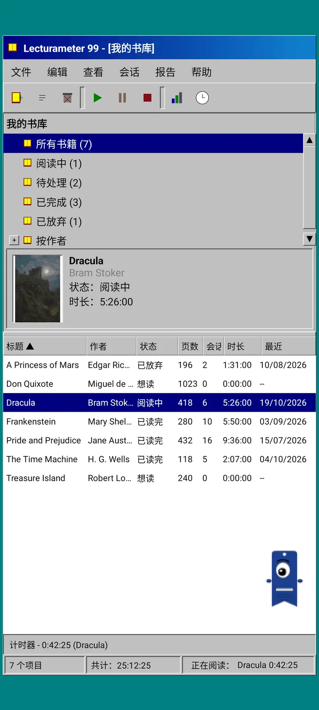
它是什么
一个九十年代末的桌面程序，运行在你的手机上。青绿色桌面上的一个窗口，配有菜单栏、工具栏、文件夹树、密集的表格和状态栏。
- 书库树：全部图书、阅读中、待处理、已完成、已弃读，以及按作者分类
- 表格包含标题、作者、状态、页数、会话、时间和最后阅读。点按列标题即可排序
- 真正的图书搜索，使用与 Lecturameter 相同的目录
- 导入和导出 Lecturameter 备份与 Goodreads CSV。你的数据进出自如，毫无损失
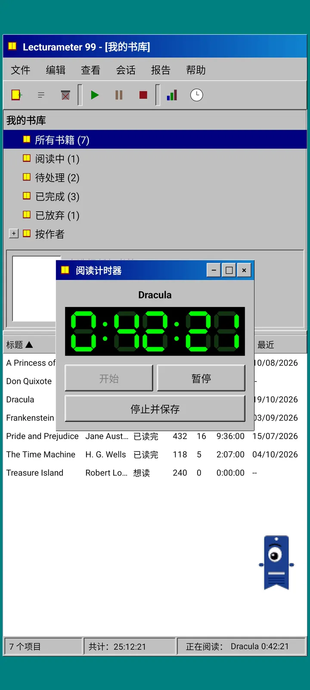
为什么会有它
一次实验：在截然不同的设计前提下，从零重建 Lecturameter 的理念，且不触碰真正的应用。在所有的重新诠释中，我最喜欢 1999 年这一版，于是把它当作一个有趣的练习完成，并做成了一个完整的客户端。它刻意比 Lecturameter 更简单：它是一个实验，原则上不会有进一步的开发。
- 计时器位于带绿色 LCD 显示屏的浮动窗口中。可以移动、最小化到任务栏，并继续在状态栏中计时
- 停止计时后，保存会话对话框可按页数、百分比或仅按时间记录，并像 Lecturameter 一样计算你的阅读节奏
- 保存的会话就是 Lecturameter 的会话：如果你导出 Lecturameter 99 的备份并导入到 Lecturameter，它们就会回到新版应用中。
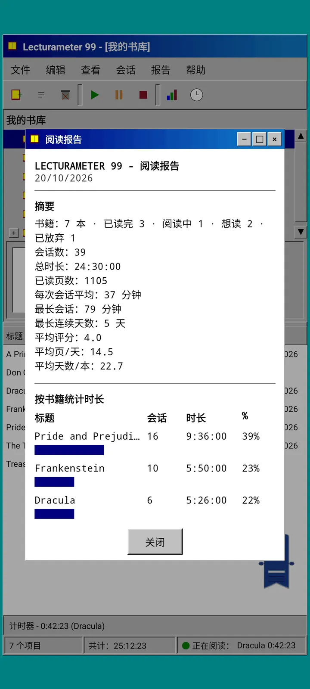
阅读报告
统计是一份等宽文本打印的报告：摘要、带块状条的每本书用时，以及以每天页数计的速度。
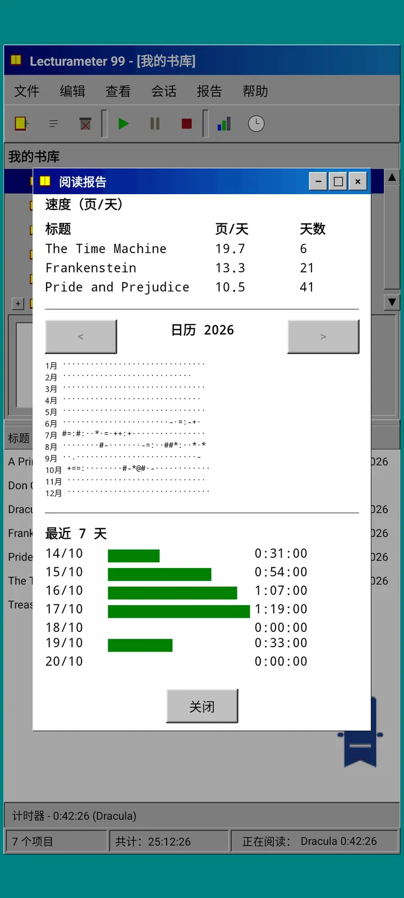
年历
一年中的每一天都按你读的页数画成一个字符，最近七天以块状条显示在下方。
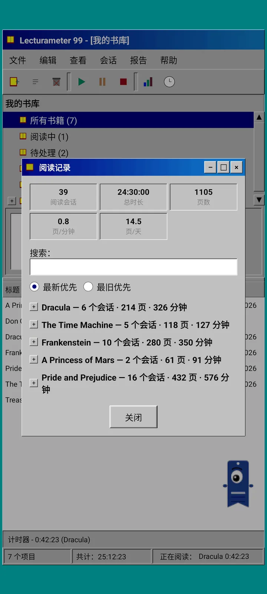
会话历史记录
会话按图书分组，以带加减号的树形显示，顶部有五项数据：会话、总时间、页数、页/分钟和页/天。
主题
Classic 98 免费，也是默认主题。主题包在 Android 上再增加六个，在 iPhone 上增加四个，每个都有自己的背景和音效。
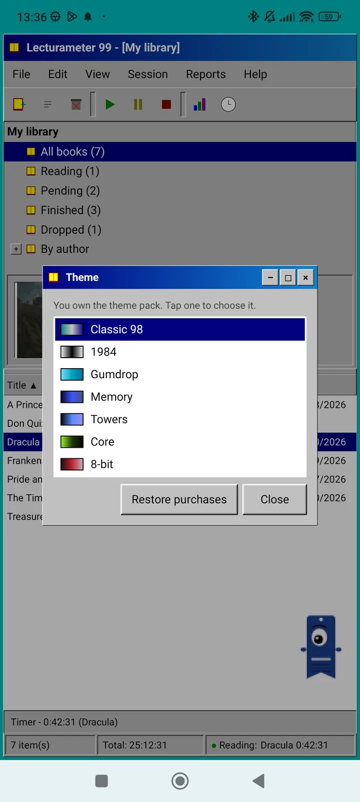
从“查看”菜单中选择
视图，主题... 会打开一个主题窗口：Android 上有七个，iPhone 上有五个。更改会同时作用于所有窗口、计时器和 Pagi。
- Classic 98，免费且为默认主题：灰色窗口、深蓝色标题栏和青绿色桌面
- 主题包：1984、Gumdrop、Memory、Towers、Core 和 8-bit。iPhone 上没有 1984 和 Gumdrop
- 每个主题都有自己的桌面背景，以及点按、窗口和计时器的专属音效
- 如果你想安静阅读，“查看，主题音效”可以关闭声音
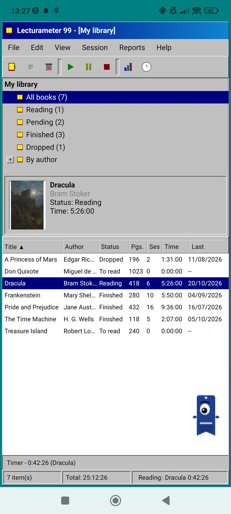
Classic 98
灰色窗口、深蓝色标题栏和青绿色桌面。免费，应用默认使用这个主题。
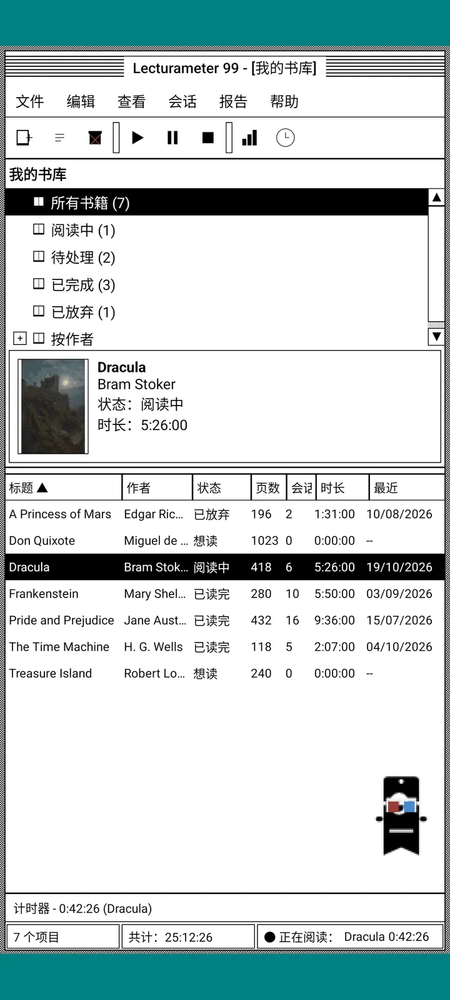
1984
一款一位色的黑白桌面，带点阵图案和方形窗口。仅限 Android。
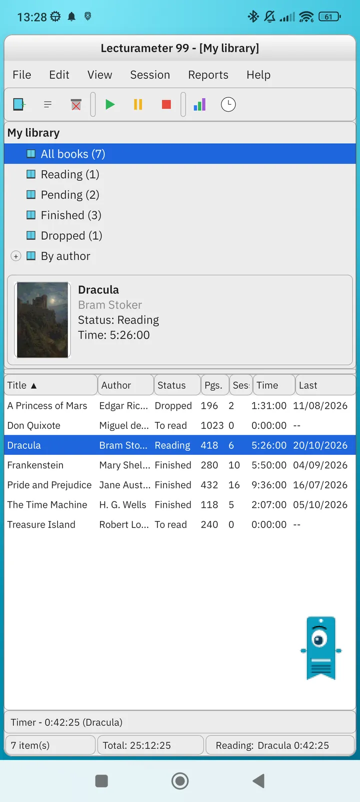
Gumdrop
半透明彩色塑料、圆角按钮和背景条纹。仅限 Android。
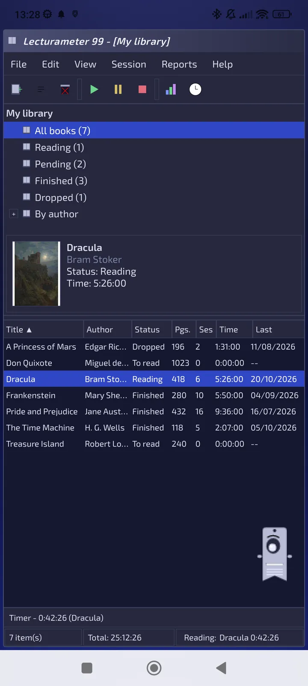
Memory
九十年代光盘游戏机的菜单风格，深蓝色调。
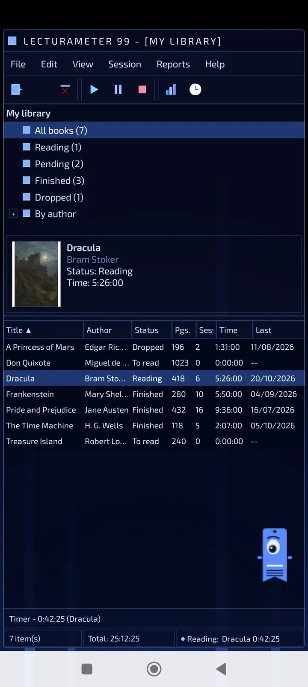
Towers
另一款九十年代光盘游戏机风格，夜蓝色配浅蓝色线条。
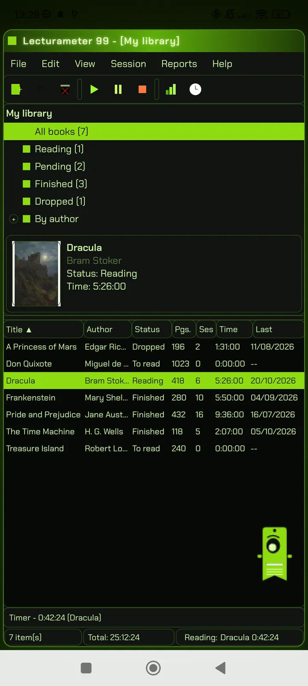
Core
黑绿配色的终端，像一块永不熄灭的屏幕。
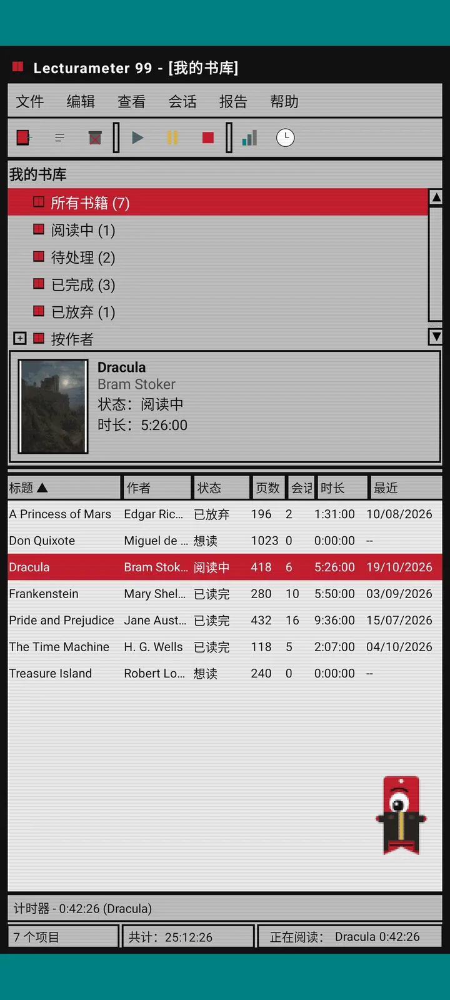
8-bit
粗大的像素、寥寥几种颜色和方块字母。
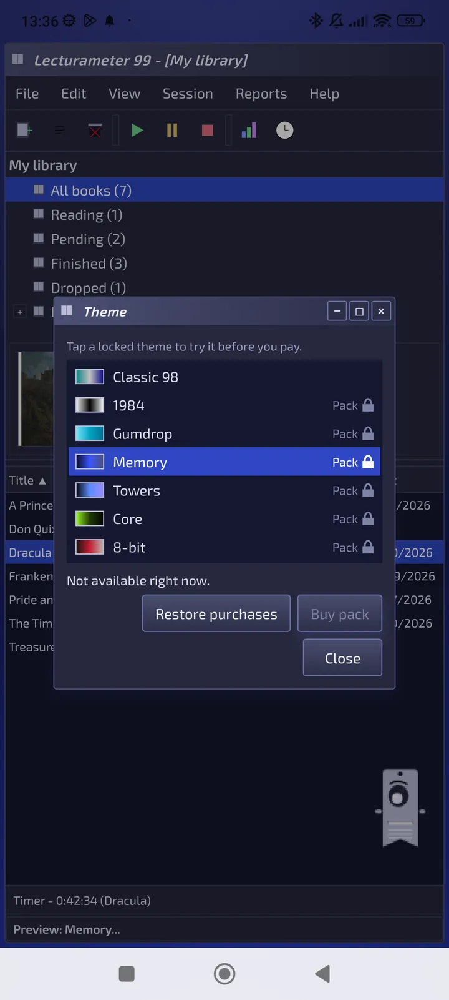
先试用，再付费
点按一个未解锁的主题，整个应用就会换成该主题。如果你关闭时没有购买，就会恢复之前的主题。
屏幕保护程序
只有在计时器运行且你不碰手机时才会出现。可设为等待 1 分钟、3 分钟、5 分钟，或永不启动。轻点一下即可返回，计时器会继续计时。
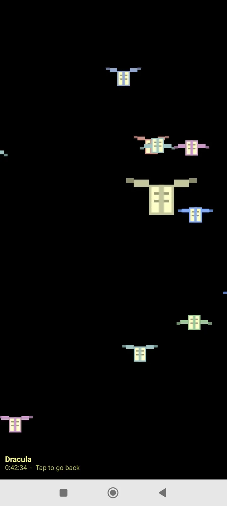
飞舞的书
像素风的书扇动着封面，飞过黑色屏幕。
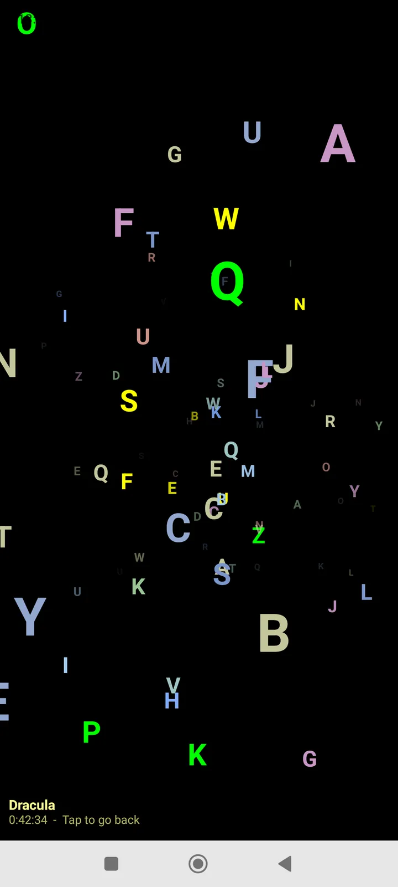
字母星空
来自多种文字的字母缓缓飘过，如同星空。
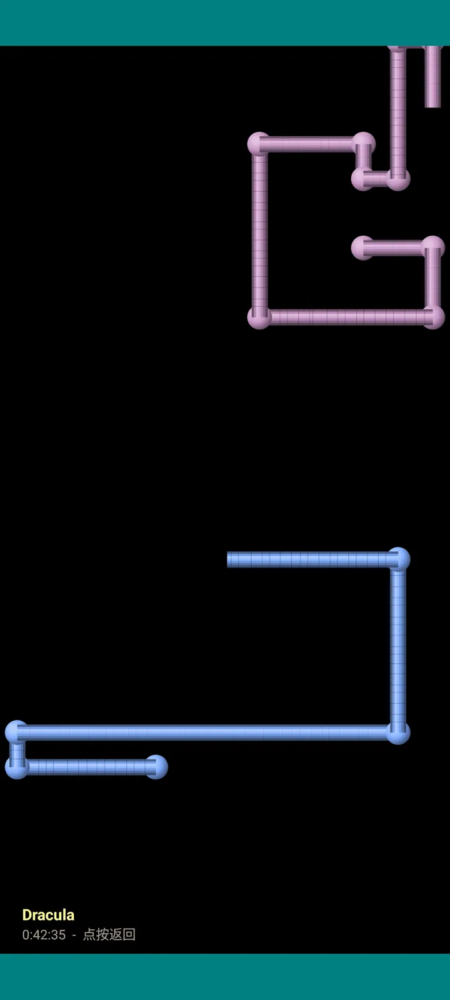
书页管道
由书页构成的管道，不断自行延伸，直到铺满屏幕。
弹跳的 Pagi
Pagi 在屏幕边缘来回弹跳。
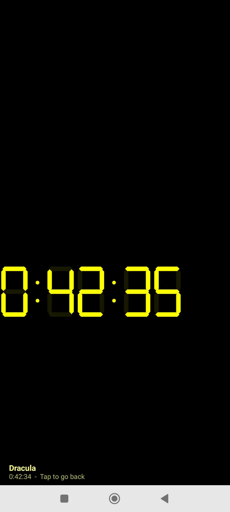
阅读时钟
用大号 LCD 数字显示会话时间。

Pagi 99 和它的服装
Pagi 也穿越到了 1999 年：像素化地自由出没在屏幕上，就像当年的办公助手。你可以拖动它，点按它会说话，并用黄色气泡显示提示。它有八套服装，在视图，Pagi 的服装... 中选择，付费前还可以试穿。
- 磁带随身听
- 反戴棒球帽
- 3D 眼镜
- 霓虹墨镜
- 手持软盘
- 皮夹克
- 口袋宠物
- 纸板王冠
商店
应用免费，记录阅读的功能完整。可购买的内容只改变外观。
整个应用，没有时间限制。
- 书库、搜索、计时器和会话
- 阅读报告和会话历史记录
- 按页数、百分比或时间记录的手动会话和已保存会话
- 每日提示，以及从帮助菜单发送反馈
- Lecturameter 备份和 Goodreads CSV，可导入也可导出
- Classic 98 主题和 Pagi 99
- 无需账号，无广告
一次性付费，没有订阅。
- 主题包，€3.49：6 个带背景和音效的主题，外加屏幕保护程序
- 屏幕保护程序，€1.99：5 个屏幕保护程序
- Pagi 服装，€1.99：8 套服装
- 完整 Lecturameter 99，€4.49：主题、屏幕保护程序和服装
仅限 Android：帮助菜单里的自愿小费，如果你想请我喝杯咖啡。
iPhone 上没有提示，也没有 1984 和 Gumdrop 主题（Apple 不允许）；其他一切相同。
主题和服装在付费前可以实时试用。如果你关闭时没有购买，之前的内容就会恢复。
与 Lecturameter 相比有何不同
与 Lecturameter 相同
- 相同的数据：图书、会话、状态、评分和笔记。两个应用的备份文件是通用的。
- 按标题或作者搜索图书。
- 真正的计时器：在后台甚至关闭应用后也会继续计时。
- 无需账号，没有广告。只在搜索书籍时联网；如果你保持开启，还会用于假名化使用统计和崩溃报告（可在帮助，隐私中关闭）。
- 支持 50 种语言。
Lecturameter 99 版独有
- 1999 年的桌面界面。没有 Material。
- 真正的窗口：可以拖动、最小化，并用叉号关闭。
- 文本形式的阅读报告，附带用字符画出的日历。
- 长按调出上下文菜单；连接键盘后还支持键盘快捷键。
- 带提示气泡的像素风 Pagi 99。
- 带专属背景和音效的可选主题、计时器运行时的屏幕保护程序，以及 Pagi 的服装。
刻意省去的内容
- 没有 Pro，也没有订阅。记录阅读完全免费，商店只出售外观。
- 没有挑战、Bingo、年度 Wrapped 或小部件。
- 没有沉浸式阅读、环境音或 Google Drive 备份。备份会保存为文件。
获取
Lecturameter 99 免费，支持 iPhone 和 Android。
阅读博客文章 了解它的由来以及可以期待什么。